Spraymax · cinematic film · storyboard v1 · 2 Nov 2026
Twelve seconds of cold light.
Nine hard-cut shots in black, ice blue and deep indigo, with the pink Himalayan
salt the only warm note. The frames below are 3D renders of each shot's framing and light, with the real
bottle and label, built to show what the film will look like. The film itself is one Seedance 2.5
generation, vertical 9:16, finished at 1080×1920.
0:00 The collar0:02 The silhouette0:03 Himalayan salt0:04 The mist0:06 The sea
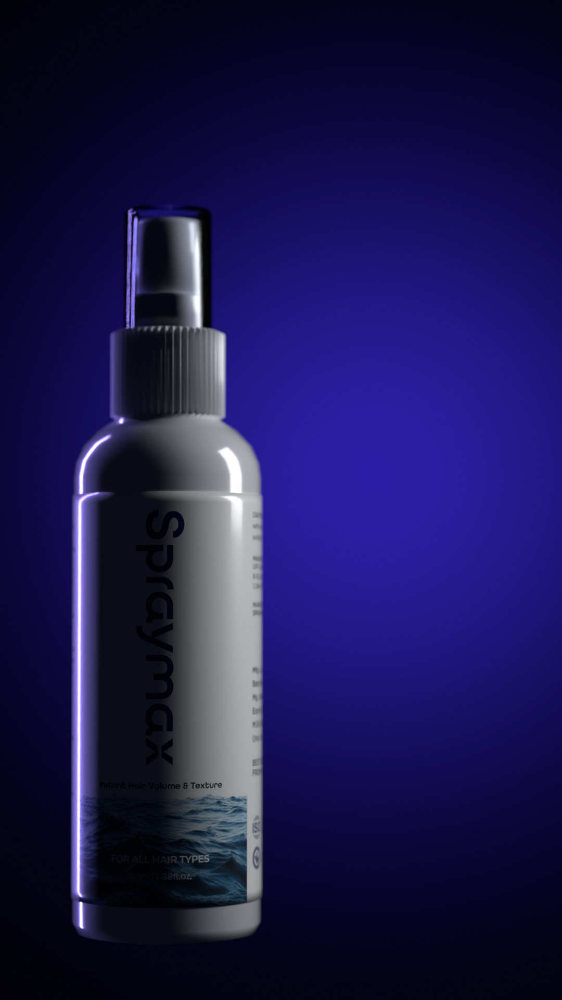
0:07 Indigo bloom
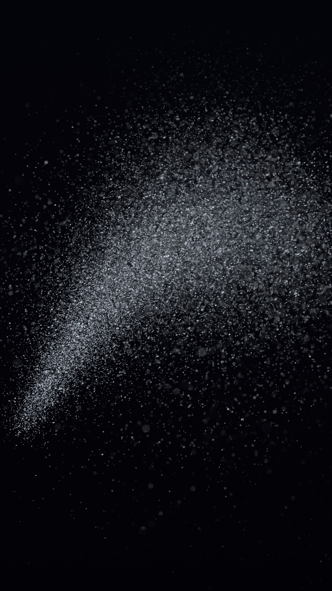
0:08 Mist in the beam
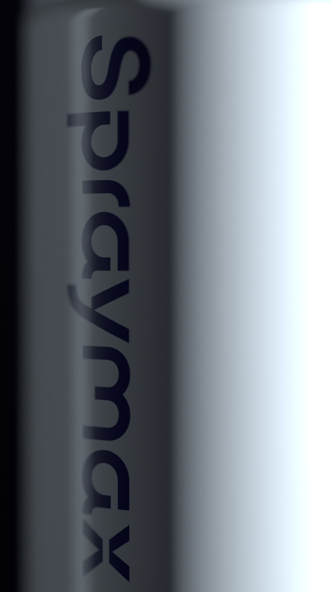
0:09 The wordmark0:10 Packshot + end card
0 s6 s12 s
01 / 09
Shot 01 · 0:00–0:02 · 2 s
The collar
Extreme macro of the pump head and the ribbed collar, cap off. A narrow hard white light sweeps right to left across the ribs and lights them one by one; the left side stays in shadow.
Camera
100 mm macro, very slow push-in
Light
One hard cold-white strip from the right, grazing; faint indigo rim
Moves
The light sweeps across the ribs
Sound
Sub-bass swell, cold air hiss (added in the edit)
Job
Hook: a mystery close-up before the bottle is revealed
This shot's line in the Seedance prompt
0-2 seconds: Extreme macro of the pump head and the ribbed collar of <Subject 1>, overcap removed, against pure black, framed as in Image 2. The camera pushes in very slowly while a narrow hard white light sweeps from right to left across the collar, catching the ribs one by one; the left side of the collar stays in near-total shadow.
02 / 09
Shot 02 · 0:02–0:03 · 1 s
The silhouette
Low three-quarter view of the capped bottle, almost in silhouette. One thin silver highlight runs down its right edge.
Camera
85 mm, low angle, creeps upward toward the collar
Light
One hard silver strip from behind on the right; faint cool bounce at the base
Moves
The highlight slides along the edge as the camera rises
Sound
Deep soft whoosh (added in the edit)
Job
Reveal the shape
This shot's line in the Seedance prompt
2-3 seconds: Low three-quarter view of <Subject 1> with its overcap on, nearly in silhouette against black, framed as in Image 3. One thin silver highlight runs down the bottle's right edge and nothing else is lit. The camera creeps slowly upward toward the collar.
03 / 09
Shot 03 · 0:03–0:04 · 1 s
Himalayan salt
Extreme macro of raw pale-pink Himalayan salt with beads of sea water, glowing pink from behind. The only warm colour in the film.
Camera
100 mm macro, holds nearly still (micro drift)
Light
Warm back light through the salt; small cold key catching the beads
Moves
A bead rolls down a facet
Sound
One soft water drip (added in the edit)
Job
Ingredient: Himalayan sea salt (from the label)
This shot's line in the Seedance prompt
3-4 seconds: Extreme macro of a raw chunk of pale pink Himalayan rock salt with frosted, cleaved facets and small beads of sea water clinging to its edges, framed as in Image 4, glowing soft pink from a light behind it against black. The camera holds nearly still with a micro drift.
04 / 09
Shot 04 · 0:04–0:06 · 2 s
The mist
Side macro of the pump head, cap off. A fine cone of mist bursts sideways out of the nozzle, backlit ice blue, tight at the nozzle and blooming wide before it thins into the black. Mist, never liquid.
Camera
100 mm macro, locked off, slow motion
Light
Ice-blue back light through the mist; soft cold key on the pump
Moves
The mist bursts and blooms
Sound
Sharp pump hiss, airy trail (added in the edit)
Job
Product action: what it does
This shot's line in the Seedance prompt
4-6 seconds: Macro side view of the pump head of <Subject 1>, overcap removed, nozzle pointing right, framed as in Image 5. Locked-off camera, slow motion. A fine cone of mist bursts sideways out of the nozzle hole, backlit ice blue so every droplet catches the light, tight at the nozzle and blooming wide, soft and translucent before thinning into black.
05 / 09
Shot 05 · 0:06–0:07 · 1 s
The sea
Low over a night ocean. A swell rises toward the lens under a cold moon; a glittering path on the water, fine spray lifting off the crest.
Camera
50 mm just above the water, holds still
Light
Moonlight from straight ahead
Moves
The swell rises and folds
Sound
Deep wave roar, spray hiss (added in post) (added in the edit)
Job
Origin: sea salt
This shot's line in the Seedance prompt
6-7 seconds: Low over a dark night ocean, framed as in Image 6. A long swell rises toward the camera under a cold moon that lays a glittering path across the water, fine spray lifting off its crest. The camera holds still just above the water.
06 / 09
Shot 06 · 0:07–0:08 · 1 s
Indigo bloom
The bottle in a black void, a little left of centre, label to camera, with a broad soft indigo wash blooming behind it from no visible source.
Camera
85 mm at label height, slow push-in
Light
Soft silver light from high right; indigo rim on the left
Moves
The indigo wash rises
Sound
Rising low drone (added in the edit)
Job
Brand colour moment
This shot's line in the Seedance prompt
7-8 seconds: <Subject 1> with its overcap on stands a little left of centre in a black void, label to camera, framed as in Image 7, a broad soft wash of deep indigo light blooming behind it from an unseen source. The camera pushes in slowly.
07 / 09
Shot 07 · 0:08–0:09 · 1 s
Mist in the beam
A soft cloud of fine mist hanging in a single hard beam of cold light, droplets glinting as it spreads up and to the right.
Camera
85 mm, locked off, slow motion
Light
One hard ice-blue beam from behind on the right
Moves
The cloud spreads and drifts
Sound
Airy hiss fading out (added in the edit)
Job
Texture: lightweight, airy finish
This shot's line in the Seedance prompt
8-9 seconds: A soft cloud of fine mist hangs in a single hard beam of cold light in black space, framed as in Image 8, the droplets glinting as the cloud slowly spreads up and to the right. Locked-off camera.
08 / 09
Shot 08 · 0:09–0:10 · 1 s
The wordmark
Macro across the front label: the indigo Spraymax wordmark running down the bottle in shallow focus, cold light grazing the print, the far side falling into shadow.
Camera
100 mm macro at an angle, holds still
Light
Cold strip grazing from the right
Moves
Nothing; a still beat before the end
Sound
Low hum (added in the edit)
Job
Name the brand
This shot's line in the Seedance prompt
9-10 seconds: Macro across the front of the label of <Subject 1>, framed as in Image 9: the indigo wordmark running down the bottle in shallow focus, a cold light grazing across the printed surface, the far side falling into shadow. The camera holds still.
09 / 09
Shot 09 · 0:10–0:12 · 2 s
Packshot + end card
Wide: the capped bottle left of centre on a deep indigo matte surface, a long hard shadow raking right, the top half left dark for the end card (added in post: logo, BORN IN HIMACHAL, spraymax.in).
Camera
85 mm just above the surface, very slow push-in
Light
Hard silver spot from low left; indigo rim
Moves
Nothing but the camera
Sound
One soft low boom, then silence (added in the edit)
Job
Pack and end card
This shot's line in the Seedance prompt
10-12 seconds: Wide packshot framed as in Image 10. <Subject 1> with its overcap on stands left of centre on a deep indigo matte surface, label to camera, a long hard shadow raking away to the right, the upper half of the frame left in empty darkness. The camera pushes in very slowly, almost imperceptibly.
How it's made
One Seedance 2.5 generation, ten reference images.
Image 1 is a sheet of real photos of the bottle (your low-light
front photo, the pump from the side, the nozzle, the flat label): the product truth for every shot. Images 2–10 are the 3D frames in this PDF, one per shot,
used only for framing, angle and light. Reference images add no cost on kie. Sound comes off; SFX and music go
on in the edit, with the end card. Prompt: prompt-seedance-12s.md, linted PASS.
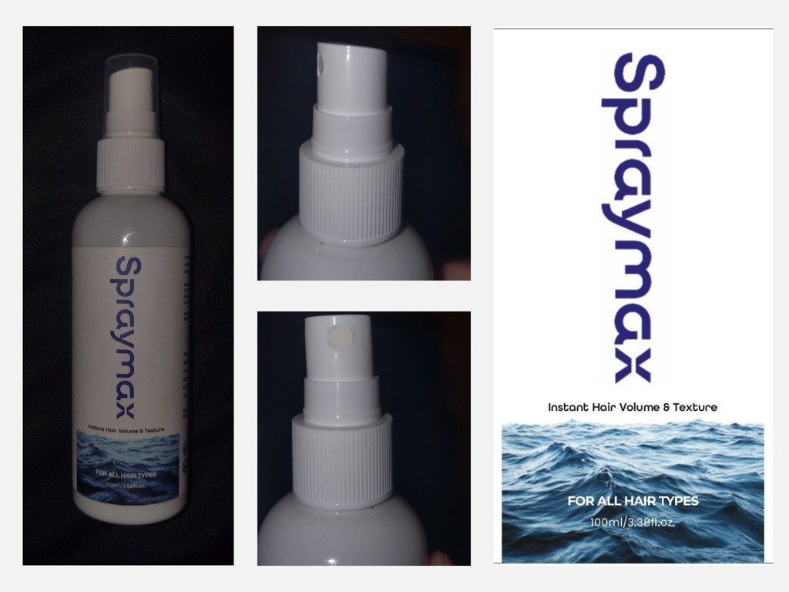
Image 1 · real bottle
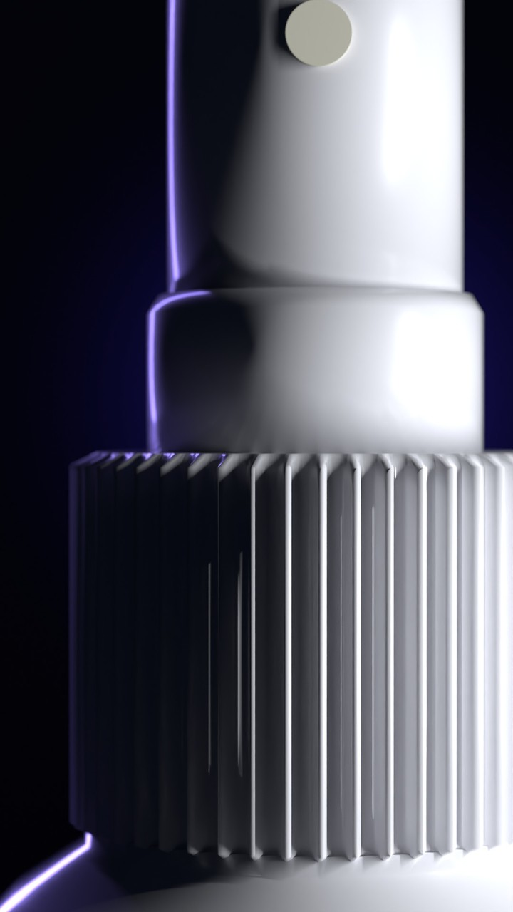
Image 2
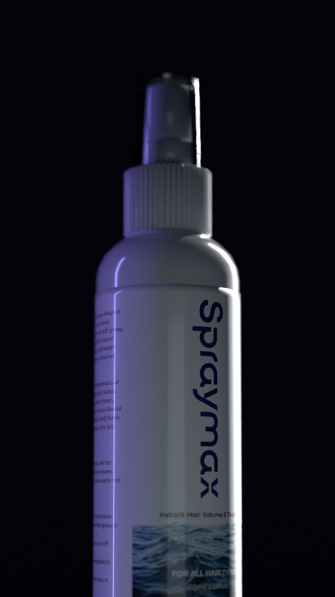
Image 3Image 4Image 5
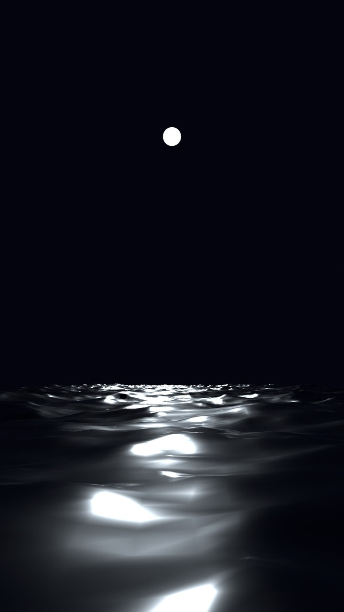
Image 6
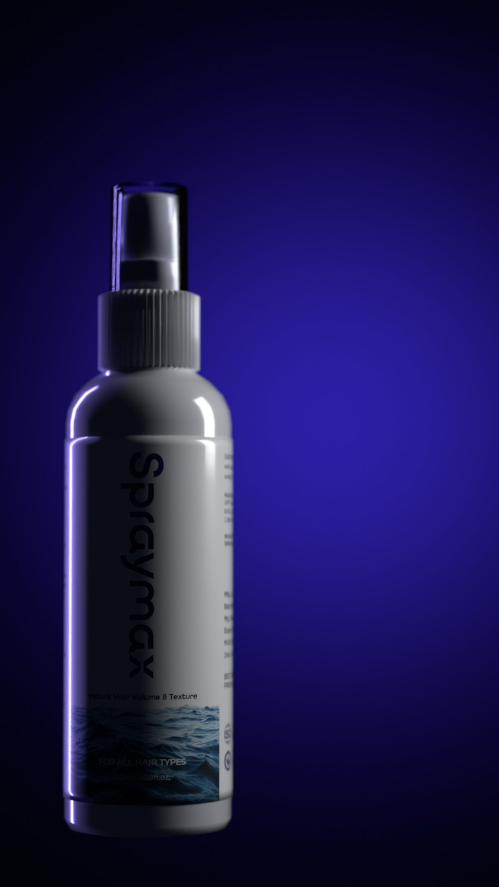
Image 7
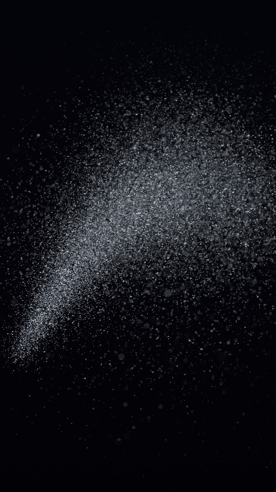
Image 8
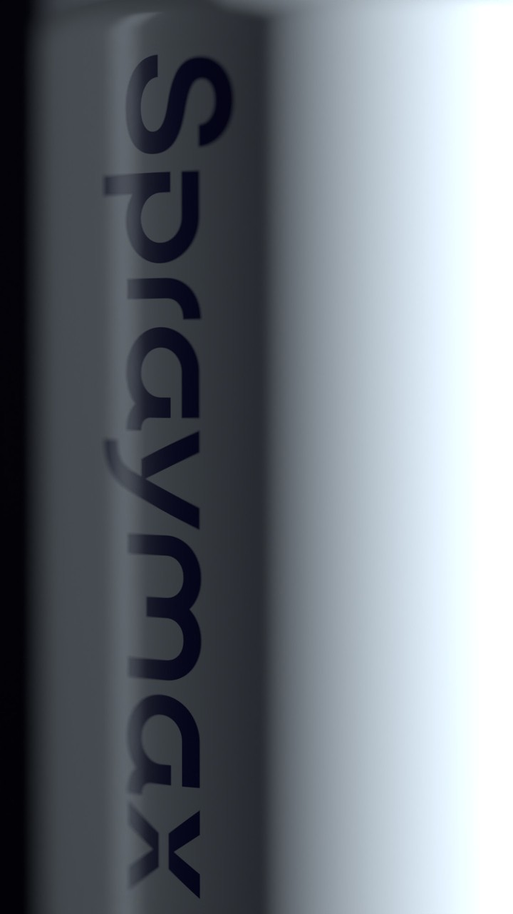
Image 9
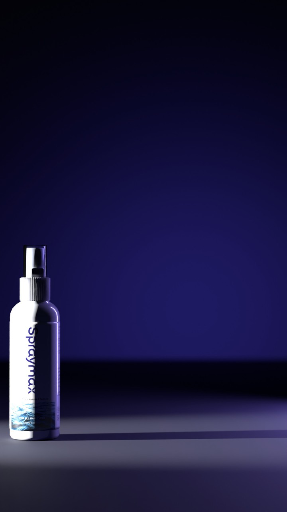
Image 10
Model
Seedance 2.5 on kie.ai, reference-to-video (bytedance/seedance-2-5)
Output
9:16 vertical, 12 s, audio off; finished at 1080×1920
Checks
Label against the real bottle, mist never liquid, no fixtures, mirror floors, hands or
faces, hard cuts on the beat
The exact prompt (sent as is after your approval)
Image 1 is the real Spraymax bottle: its front, its pump from the side, its pump from the front and its flat label. Use it for the exact shape, colours and label in every shot. Define the slim off-white bottle with the finely ribbed collar, the small white pump head and the vertical indigo wordmark in Image 1 as <Subject 1>. Images 2 to 10 are layout frames for shots 1 to 9, in order: use each one only for that shot's framing, camera angle and lighting, and render every shot as real photography.
Product truth: <Subject 1> is a slim 100 ml bottle about 14 cm tall with a rounded shoulder, made of smooth, slightly greyish off-white opaque plastic with a soft sheen; a matte white, finely ribbed collar; a small smooth white pump head with a tiny round nozzle hole in its side, on the same side as the back label, so it is hidden whenever the front label faces the camera; a clear, lightly frosted overcap. The white wrap-around label carries the indigo wordmark running down the bottle from top to bottom and a dark navy ocean-wave photo band at the base. The pump is a fine-mist sprayer: it releases only a soft cloud of airborne droplets.
A 12-second vertical luxury product film for a Himalayan sea salt hair spray: nine hard-cut shots in a black studio and on a night sea, cold light, one slow deliberate camera move per shot.
Hard cuts only throughout: every shot is a completely separate camera setup. No transitions, no dissolves, no wipes, no fades, no morphing between shots.
Global look: deep low-key, one hard light source per shot, roughly eighty percent black negative space in every frame, vertical 9:16. Cold light only, icy blue and silver-white with deep indigo washes; the pink Himalayan salt is the only warm-toned element in the film. The white bottle is lit low, so it reads soft silver-white with crisp edge highlights and a cool gradient across its curve, never blown out to flat white. Shot on a cinema camera with macro and 85 mm lenses, shallow focus, fine film grain, neutral white balance, real physics.
Never render: a glossy, wet or mirrored floor; a reflection of the bottle in the ground; a visible light fixture of any kind, including neon tubes, LED rings, strips, lamps or softboxes; a glowing halo directly behind the product; lens flares; liquid pouring, dripping or running from the nozzle; any hand, face or person; any text other than the bottle's own label; the bottle centred and fully lit in every shot.
0-2 seconds: Extreme macro of the pump head and the ribbed collar of <Subject 1>, overcap removed, against pure black, framed as in Image 2. The camera pushes in very slowly while a narrow hard white light sweeps from right to left across the collar, catching the ribs one by one; the left side of the collar stays in near-total shadow.
2-3 seconds: Low three-quarter view of <Subject 1> with its overcap on, nearly in silhouette against black, framed as in Image 3. One thin silver highlight runs down the bottle's right edge and nothing else is lit. The camera creeps slowly upward toward the collar.
3-4 seconds: Extreme macro of a raw chunk of pale pink Himalayan rock salt with frosted, cleaved facets and small beads of sea water clinging to its edges, framed as in Image 4, glowing soft pink from a light behind it against black. The camera holds nearly still with a micro drift.
4-6 seconds: Macro side view of the pump head of <Subject 1>, overcap removed, nozzle pointing right, framed as in Image 5. Locked-off camera, slow motion. A fine cone of mist bursts sideways out of the nozzle hole, backlit ice blue so every droplet catches the light, tight at the nozzle and blooming wide, soft and translucent before thinning into black.
6-7 seconds: Low over a dark night ocean, framed as in Image 6. A long swell rises toward the camera under a cold moon that lays a glittering path across the water, fine spray lifting off its crest. The camera holds still just above the water.
7-8 seconds: <Subject 1> with its overcap on stands a little left of centre in a black void, label to camera, framed as in Image 7, a broad soft wash of deep indigo light blooming behind it from an unseen source. The camera pushes in slowly.
8-9 seconds: A soft cloud of fine mist hangs in a single hard beam of cold light in black space, framed as in Image 8, the droplets glinting as the cloud slowly spreads up and to the right. Locked-off camera.
9-10 seconds: Macro across the front of the label of <Subject 1>, framed as in Image 9: the indigo wordmark running down the bottle in shallow focus, a cold light grazing across the printed surface, the far side falling into shadow. The camera holds still.
10-12 seconds: Wide packshot framed as in Image 10. <Subject 1> with its overcap on stands left of centre on a deep indigo matte surface, label to camera, a long hard shadow raking away to the right, the upper half of the frame left in empty darkness. The camera pushes in very slowly, almost imperceptibly.
Throughout: <Subject 1> keeps its exact shape, size, label and colours from Image 1; no new reflections. Keep it subtitle-free. No other logos. No music and no voices.
Budget and the one decision
Native 1080p doesn't fit in $7. 720p does, with room to fix a shot.
Option
What you get
Credits
Cost
Retakes left
A · 720precommended
Seedance 2.5 at 720p, 12 s, upscaled to 1080×1920 in the finishing pass (sharpen, grain, grade).
If one shot misses, regenerate just that shot as a 4 s clip (252 cr) and cut it in.
756
$3.78
2 single-shot fixes inside $7 (1260 cr, $6.30)
B · native 1080p
Seedance 2.5 at 1080p, 12 s. Sharpest result, but one take only: if a shot fails there's no budget to fix it.
1896
$9.48
none (141 cr left)
C · draft, then 1080p
A 480p draft to check the real motion (336 cr), then the 1080p final from the same draft.
Kie doesn't list the final's price; at the 1080p rate it's ~2232 cr.
Nothing has been spent. The prompt is sent only after you approve it.
To go ahead, reply with A or B. I'll send that exact prompt with these ten images, check every
shot (label against the real bottle, mist never liquid, no fixtures or mirror floors), fix or regenerate what
fails, then grade, add sound and the end card, and deliver 1080×1920.